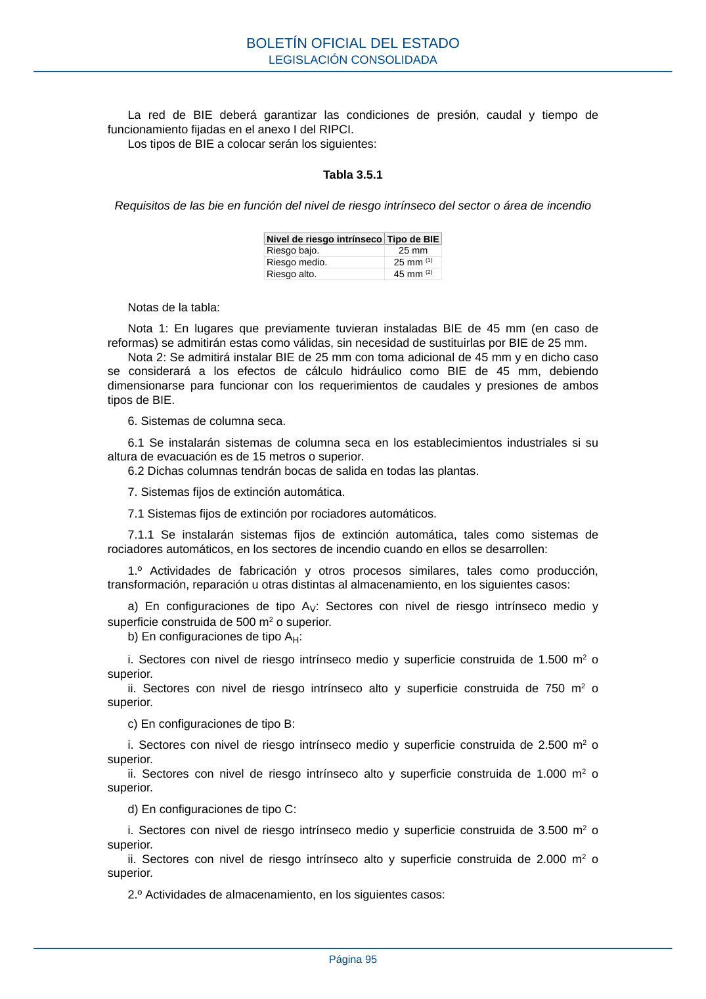

RSCIEI · edición 2025-04-10 · capa asociada
Documento RSCIEI-asociada · SHA-256 del PDF 85aa0af25d51e5b58d8975a4eefbf76d3f57a8933445cfe814ae9c4818a2e3e7
Página física 95 de 108.
Copia fiel del PDF fuente · Fuente oficial
Ficha de la disposición en la fuente oficial
Texto extraído y reorganizado: Basado en datos de la Agencia Estatal Boletín Oficial del Estado. PDF reproducido: Fuente de los datos: Agencia Estatal Boletín Oficial del Estado.
Formato: Texto de la página (Markdown)
La red de BIE deberá garantizar las condiciones de presión, caudal y tiempo de funcionamiento fijadas en el anexo I del RIPCI. Los tipos de BIE a colocar serán los siguientes: Tabla 3.5.1 Requisitos de las bie en función del nivel de riesgo intrínseco del sector o área de incendio Nivel de riesgo intrínseco Tipo de BIE Riesgo bajo. 25 mm Riesgo medio. 25 mm (1) Riesgo alto. 45 mm (2) Notas de la tabla: Nota 1: En lugares que previamente tuvieran instaladas BIE de 45 mm (en caso de reformas) se admitirán estas como válidas, sin necesidad de sustituirlas por BIE de 25 mm. Nota 2: Se admitirá instalar BIE de 25 mm con toma adicional de 45 mm y en dicho caso se considerará a los efectos de cálculo hidráulico como BIE de 45 mm, debiendo dimensionarse para funcionar con los requerimientos de caudales y presiones de ambos tipos de BIE. 6. Sistemas de columna seca. 6.1 Se instalarán sistemas de columna seca en los establecimientos industriales si su altura de evacuación es de 15 metros o superior. 6.2 Dichas columnas tendrán bocas de salida en todas las plantas. 7. Sistemas fijos de extinción automática. 7.1 Sistemas fijos de extinción por rociadores automáticos. 7.1.1 Se instalarán sistemas fijos de extinción automática, tales como sistemas de rociadores automáticos, en los sectores de incendio cuando en ellos se desarrollen: 1.º Actividades de fabricación y otros procesos similares, tales como producción, transformación, reparación u otras distintas al almacenamiento, en los siguientes casos: a) En configuraciones de tipo AV: Sectores con nivel de riesgo intrínseco medio y superficie construida de 500 m2 o superior. b) En configuraciones de tipo AH: i. Sectores con nivel de riesgo intrínseco medio y superficie construida de 1.500 m2 o superior. ii. Sectores con nivel de riesgo intrínseco alto y superficie construida de 750 m2 o superior. c) En configuraciones de tipo B: i. Sectores con nivel de riesgo intrínseco medio y superficie construida de 2.500 m2 o superior. ii. Sectores con nivel de riesgo intrínseco alto y superficie construida de 1.000 m2 o superior. d) En configuraciones de tipo C: i. Sectores con nivel de riesgo intrínseco medio y superficie construida de 3.500 m2 o superior. ii. Sectores con nivel de riesgo intrínseco alto y superficie construida de 2.000 m2 o superior. 2.º Actividades de almacenamiento, en los siguientes casos: BOLETÍN OFICIAL DEL ESTADO LEGISLACIÓN CONSOLIDADA Página 95

Datos candidatos: compruebe celdas y notas en el PDF.